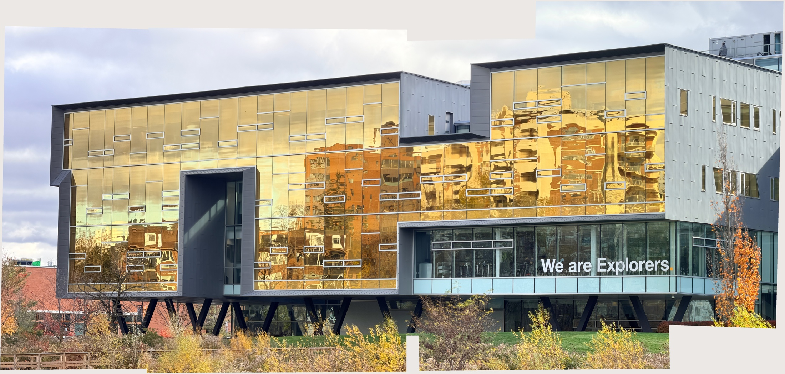
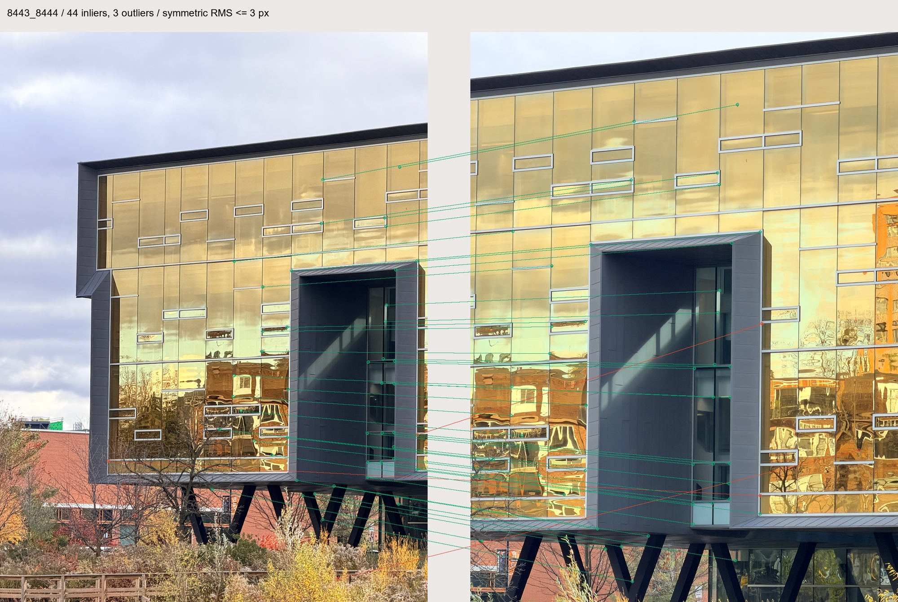
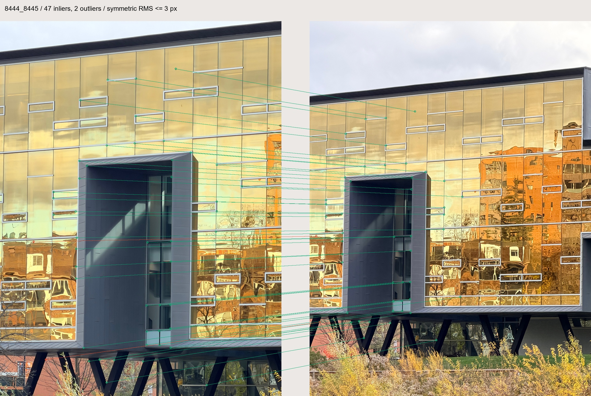
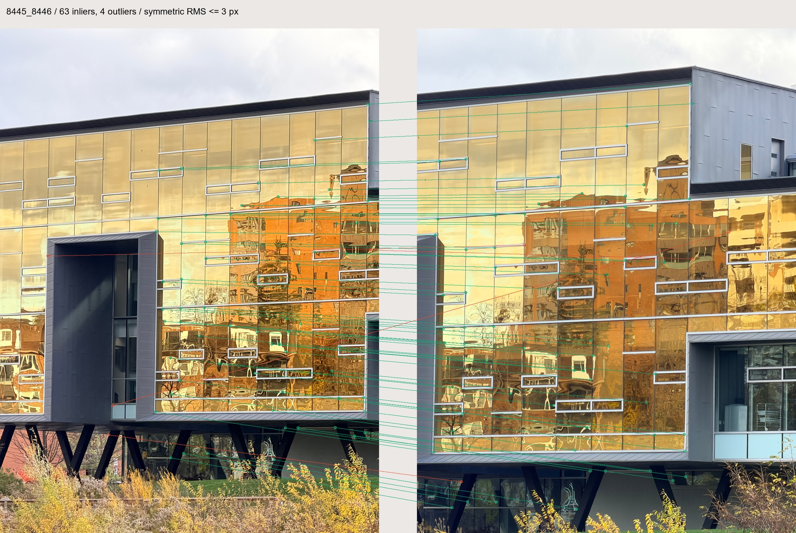
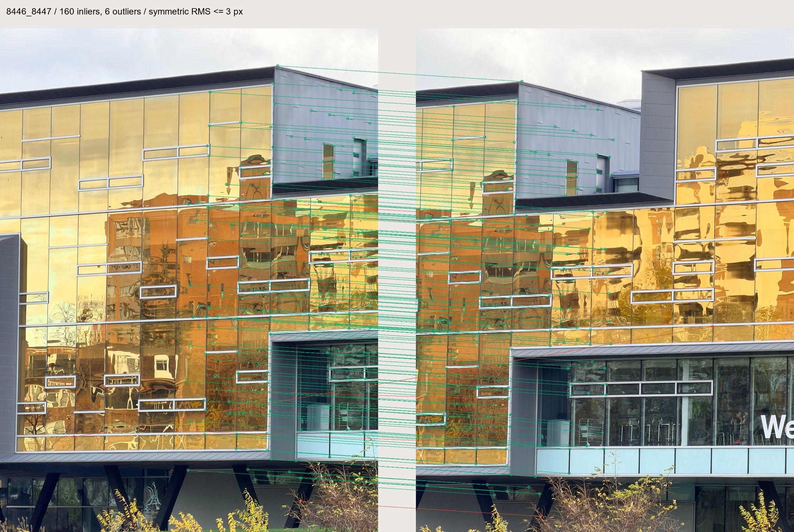
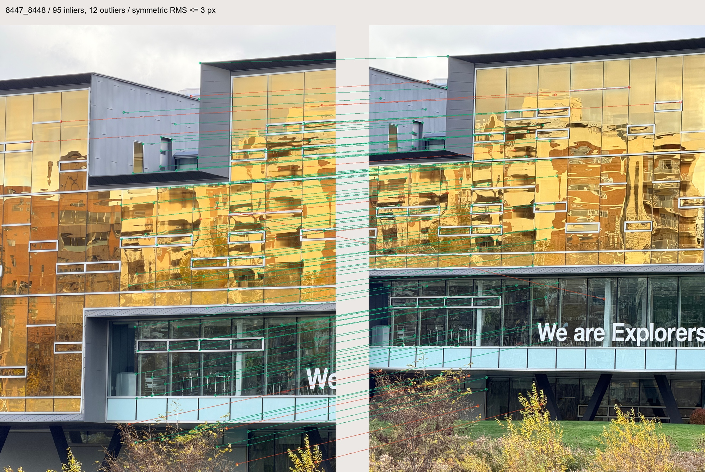
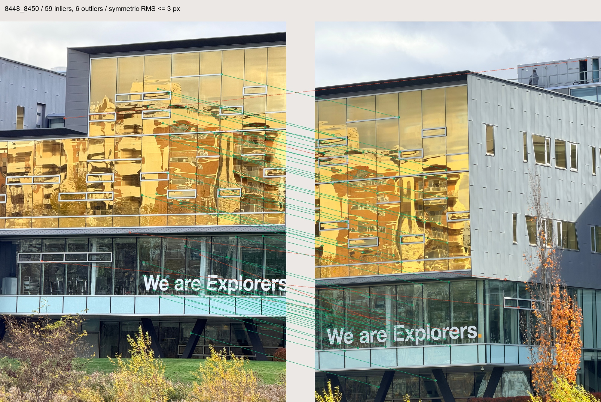
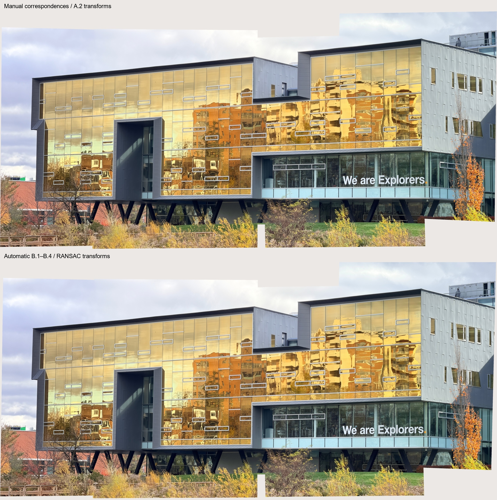
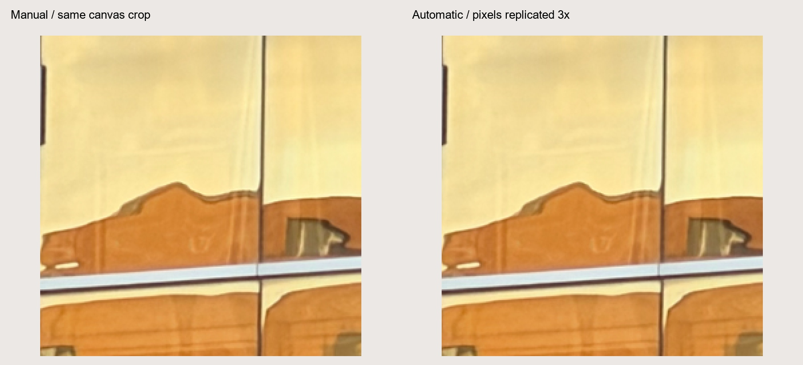
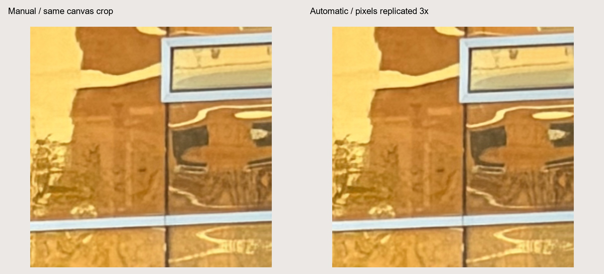

Mosaics
SYDE 671 · Assignment 3 · James Xie
B.4 / ONE
AUTOMATIC MOSAIC.
From detected corners and local descriptors to robust geometry and a wider view.
01 / Seven views, automatically aligned.


The required one automatic mosaic uses seven images, above the minimum of three. The manual image is the Part A comparison baseline.
The automatic result contains 18,984,416 valid pixel centers, of which 11,414,901 have at least two source contributions. B.1–B.4 cover corners, descriptors, matches and RANSAC.
02 / Four points propose. The rest test.
Model inputs are B.3 ratio < 0.7 plus mutual-nearest matches: 501 correspondences over six adjacent pairs. Each draw selects four distinct pairs. Repeated points or near-collinear triplets are rejected.
The handwritten A.2 solver estimates H. All inputs are scored by symmetric RMS transfer error in 1200 × 1600 working coordinates.
Invalid projections get infinite error. Select the largest consensus, breaking ties by squared error truncated at 3². Seeds are 1337–1342; target at least 100 hypotheses with a 5,000-draw cap. Adaptive stopping uses nominal confidence 0.999 and inlier fraction⁴, without guaranteeing success. The cap takes priority; all six pairs tested 100 hypotheses.
Require eight inliers, then refit and reclassify until stable, with a 20-round cap. All six models converged. Failed estimation returns no H; manual H is never substituted.
RANSAC is handwritten using NumPy linear algebra. A.3 supplies inverse bilinear sampling and A.4 supplies masked feathering; no built-in estimator or stitcher is used.
03 / Six robust transformations.
| Pair | Model inputs | Inliers | Outliers | Inlier RMSE working px |
|---|---|---|---|---|
| 8443 → 8444 | 47 | 44 | 3 | 1.059 |
| 8444 → 8445 | 49 | 47 | 2 | 0.875 |
| 8445 → 8446 | 67 | 63 | 4 | 0.798 |
| 8446 → 8447 | 166 | 160 | 6 | 0.852 |
| 8447 → 8448 | 107 | 95 | 12 | 0.913 |
| 8448 → 8450 | 65 | 59 | 6 | 1.028 |
468 of 501 model inputs meet their final pairwise threshold. This measures model support, not correctness. Repeated features and different planes can still mislead the fit.
Of 552 B.3 ratio matches, 51 nonmutual pairs are excluded from fitting but retain saved residuals. Automatic estimation uses no manual A.2 points or matrices.
8443 → 8444 · RANSAC seed 1337
44 inliers.
3 rejected.

Inlier symmetric error: median 0.777, RMSE 1.059, maximum 2.282 working pixels. These are fitting residuals, not independent accuracy.
100 random draws; 100 tested hypotheses; 0 degenerate draws rejected; 0 solver failures. Least-squares reclassification converged in 1 round(s). Initial, final and refit masks are saved.
Automatic H, working to working
1.373145652 -0.002489001255 -780.5173812 0.008736169439 1.368409925 -323.066804 9.701718871e-06 5.410670394e-07 1
Converted H, original to original
0.9692849229 -0.001756833354 -1967.394323 0.006168795934 0.9659400938 -814.6205047 2.71757833e-06 1.515599536e-07 1
Point identities, inlier masks, errors, seed sample and matrices · Model statistics and iteration history · B.3 tentative matches
8444 → 8445 · RANSAC seed 1338
47 inliers.
2 rejected.

Inlier symmetric error: median 0.634, RMSE 0.875, maximum 2.109 working pixels. These are fitting residuals, not independent accuracy.
100 random draws; 100 tested hypotheses; 0 degenerate draws rejected; 0 solver failures. Least-squares reclassification converged in 1 round(s). Initial, final and refit masks are saved.
Automatic H, working to working
0.7249565309 -0.003106785526 -92.66835745 0.005923420405 0.7243619545 233.7883959 2.563879142e-06 -1.7945754e-07 1
Converted H, original to original
1.027023798 -0.004401374169 -330.3184661 0.00839282565 1.026180082 835.123899 1.01741309e-06 -7.121336072e-08 1
Point identities, inlier masks, errors, seed sample and matrices · Model statistics and iteration history · B.3 tentative matches
8445 → 8446 · RANSAC seed 1339
63 inliers.
4 rejected.

Inlier symmetric error: median 0.525, RMSE 0.798, maximum 1.994 working pixels. These are fitting residuals, not independent accuracy.
100 random draws; 100 tested hypotheses; 0 degenerate draws rejected; 0 solver failures. Least-squares reclassification converged in 1 round(s). Initial, final and refit masks are saved.
Automatic H, working to working
1.208166115 -0.005070606237 -535.1528577 0.006481573203 1.201960884 -121.4858585 6.511370594e-06 -2.814487486e-06 1
Converted H, original to original
0.8528256608 -0.003579855388 -1348.918276 0.004576620408 0.8484435066 -306.4809006 1.823915759e-06 -7.883728939e-07 1
Point identities, inlier masks, errors, seed sample and matrices · Model statistics and iteration history · B.3 tentative matches
8446 → 8447 · RANSAC seed 1340
160 inliers.
6 rejected.

Inlier symmetric error: median 0.571, RMSE 0.852, maximum 2.834 working pixels. These are fitting residuals, not independent accuracy.
100 random draws; 100 tested hypotheses; 0 degenerate draws rejected; 0 solver failures. Least-squares reclassification converged in 1 round(s). Initial, final and refit masks are saved.
Automatic H, working to working
1.00816181 -0.01250428818 -548.1063529 0.01667707899 1.005346527 34.7691378 6.220615842e-06 -2.337362063e-08 1
Converted H, original to original
1.00816557 -0.0125043186 -1381.227292 0.01667898623 1.005348399 87.60165162 2.468502964e-06 -9.275263618e-09 1
Point identities, inlier masks, errors, seed sample and matrices · Model statistics and iteration history · B.3 tentative matches
8447 → 8448 · RANSAC seed 1341
95 inliers.
12 rejected.

Inlier symmetric error: median 0.618, RMSE 0.913, maximum 2.638 working pixels. These are fitting residuals, not independent accuracy.
100 random draws; 100 tested hypotheses; 0 degenerate draws rejected; 0 solver failures. Least-squares reclassification converged in 2 round(s). Initial, final and refit masks are saved.
Automatic H, working to working
0.8817760039 -0.007642725287 -347.5017628 0.01579029124 0.8790034857 -18.03193058 7.741136538e-06 2.614401319e-06 1
Converted H, original to original
1.249190521 -0.01082589483 -1240.241321 0.02237359649 1.24526016 -64.05259086 3.071889172e-06 1.037464081e-06 1
Point identities, inlier masks, errors, seed sample and matrices · Model statistics and iteration history · B.3 tentative matches
8448 → 8450 · RANSAC seed 1342
59 inliers.
6 rejected.

Inlier symmetric error: median 0.657, RMSE 1.028, maximum 2.969 working pixels. These are fitting residuals, not independent accuracy.
100 random draws; 100 tested hypotheses; 0 degenerate draws rejected; 0 solver failures. Least-squares reclassification converged in 1 round(s). Initial, final and refit masks are saved.
Automatic H, working to working
1.039335524 0.04301327257 -620.8269228 -0.03878946678 1.032356585 211.5906748 7.620079331e-06 -6.021219686e-06 1
Converted H, original to original
0.7336506497 0.03036104569 -1564.706501 -0.02737919364 0.7287214329 533.0675831 2.134477232e-06 -1.686617129e-06 1
Point identities, inlier masks, errors, seed sample and matrices · Model statistics and iteration history · B.3 tentative matches
04 / Preserve coordinates, then share a canvas.
B.2 transform C maps original to working coordinates. Convert H before chaining to handle mixed 4284 × 5712 and 3024 × 4032 originals.
Chain H forward left of the reference and inversely right. Four-corner bounds give one shared manual/automatic canvas. Automatic H is frozen before manual H is read and remains unchanged.
Original RGB and feather weights share the bilinear warp. Invalid samples have zero weight; any valid support is opaque, including black pixels. All seven images use a fixed blend order and encoded RGB, without exposure correction or a Laplacian pyramid.
05 / Manual versus automatic.

Manual baseline on the common canvas · Part A mosaic report



Both methods align the wider facade. Frames, other depths, reflections and vegetation can still disagree, and chaining can accumulate drift. Feathering reduces seams but cannot fix misalignment.
Without independent full-scene ground truth or loop closure, fitting residuals cannot establish global accuracy or prove one method better.
Reproduce & inspect.
python run_ransac.py python run_mosaic.py python build_report.py python -m unittest test_ransac -v
Run from B4 in the existing NumPy/Pillow environment. No new dependency was installed.
Four-point RANSAC and coordinate conversion · Automatic model estimation · Frozen model statistics and provenance · Common-canvas mosaic generation · All rendering parameters, masks, hashes and scalar probes · Seven analytical unit checks
Automatic validity mask · Automatic raw coverage count · Manual validity mask


Checks cover known noisy H, outliers, seeds, degenerate inputs and coordinate conversion. Rendering verifies 45 samples per method, masks, single-source pixels, unchanged inputs and exact A.4 manual equality.